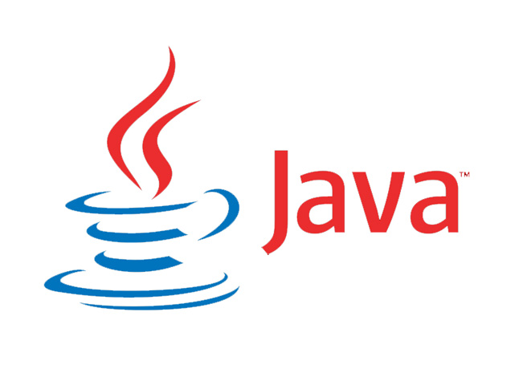

Veja à uma de nossas aulas.
Clique na aula e veja o que você irá aprender em nosso curso, Maravilhe-se com o universo extraordinario que espera por você .

Administração de Serviços para Internet
Apresenta ao aluno o universo GNU/Linux, a filosofia do Software Livre e o habilita a interagir de forma adequada com o sistema operacional Linux.

Programação Orientada a Objetos
A Programação Orientada a Objetos (POO) é um padrão de desenvolvimento de softwares utilizado em muitas linguagens de programação atuais, como Java, C#, PHP, Python, entre outras.
Banco de Dados
Este profissional tem papel estratégico numa organização. Sua função é manipular sistemas tecnológicos que permitam organizar, estruturar e distribuir as informações de uma empresa.